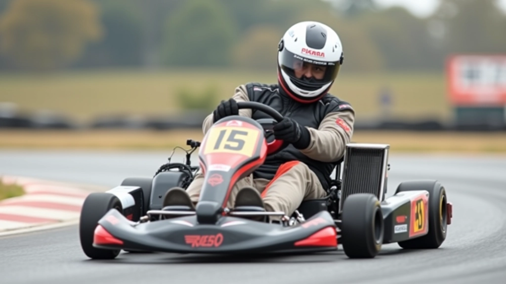
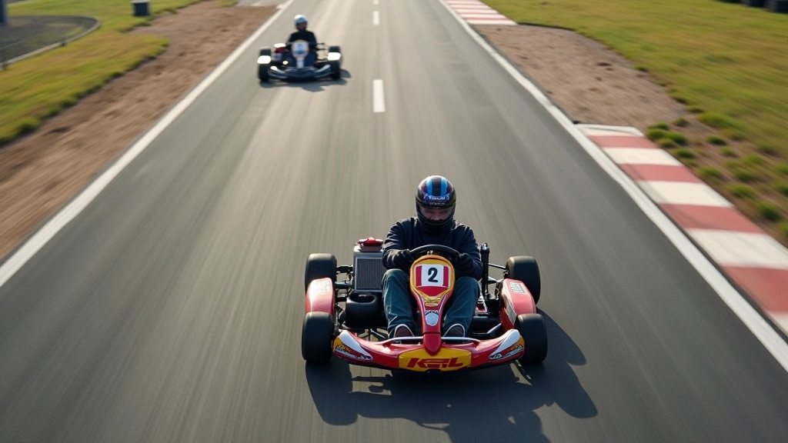

فهم أساسيات قراءة المسار
قراءة المسار ليست مجرد مهارة عشوائية — إنها الفرق بين سائق سريع وسائق يفقد أوقاتاً ثمينة في كل منعطف. عندما تقترب من المنحنى، تحتاج إلى معرفة بالضبط أين ستدخل وأين ستخرج وكيف ستصل من نقطة البداية إلى النهاية بأسرع وقت ممكن.
المسار يخبرك بالكثير إذا كنت تعرف كيف تستمع إليه. علامات الإطارات، الخطوط المرسومة على الرصيف، حتى نسيج السطح — كل هذا يعطيك معلومات قيمة. أول مرة تقود فيها المسار، قد تشعر بالارتباك. لكن بعد عدة جولات، ستبدأ الأنماط بالظهور.
الشيء المهم هو أن تأخذ وقتك. لا تحاول أن تكون الأسرع في الجولة الأولى. بدلاً من ذلك، ركز على فهم المسار والمنحنيات. تعرف على أين تكون السرعة آمنة وأين تحتاج إلى التحكم أكثر.


اختيار خط السباق المثالي
خط السباق هو المسار الذي تتبعه عجلات كارتك حول المسار. ليس كل الخطوط متساوية. الخط الجيد يعني خروجاً أسرع وسرعة أعلى. الخط السيء؟ ستشعر بالفرق على الفور — سيكون خروجك بطيئاً وستفقد التسارع.
الخط الكلاسيكي يتضمن ثلاث نقاط أساسية: نقطة الدخول، القمة (الـ apex)، ونقطة الخروج. تريد أن تدخل المنحنى من الخارج قليلاً، تمر عبر القمة بأسرع ما يمكن بأمان، ثم تخرج نحو الخارج مرة أخرى. هذا يعطيك أكثر نطاق ممكن للدوران، مما يعني نصف قطر منحنى أكبر وسرعة أعلى.
نصيحة سريعة: لا تحاول أن تكون على الحد الداخلي طول الوقت. الكثير من السائقين الجدد يفعلون هذا ويخسرون السرعة. تذكر — الخط الأوسع يعني السرعة الأعلى.
تكييف الخط حسب ظروف المسار
المسار لا يبقى نفسه طول الوقت. درجات الحرارة تتغير، الرطوبة تؤثر على الإطارات، والمسار نفسه يصبح أكثر أو أقل التصاقاً مع مرور الوقت. هذا يعني أن خطك قد يحتاج إلى تعديلات.
في الجولات الأولى من جلسة السباق، قد يكون المسار أكثر انزلاقاً. إطارات باردة تعني قبضة أقل. في هذه الحالة، قد تحتاج إلى الدخول قليلاً أعمق والخروج أكثر تدرجاً. مع ارتفاع درجة حرارة الإطارات، يمكنك أن تصبح أكثر عدوانية.
يُفضل أن تبدأ بخط محافظ وتزيد السرعة تدريجياً. هذا يعطيك فرصة لفهم الحدود الحقيقية لكارتك والمسار. بعد 15-20 دقيقة، ستشعر بفرق كبير في الأداء.
نصائح عملية للسباقين
راقب السائقين الأسرع
انظر إلى كيفية دخول السائق الأسرع للمنحنيات. ركز على أين يبدأ التسارع وأين يكون أقل حذراً. ستتعلم الكثير من مجرد المراقبة.
جرب خطوطاً مختلفة
لا تلتزم بخط واحد. جرب الدخول من زوايا مختلفة، جرب قمم مختلفة. ستجد أحياناً أن ما يبدو غريباً يكون في الواقع أسرع.
اضبط تدريجياً
لا تغير كل شيء في نفس الوقت. غيّر جانباً واحداً من خطك في المنحنى الواحد، ثم قيّم الفرق. هذا يساعدك على فهم ما ينجح فعلاً.
تذكر الشعور
لا تركز فقط على الأرقام والنقاط. تذكر كيف كان الشعور عندما حققت أفضل جولة. الشعور بالسيارة والتحكم به يأتي مع الممارسة.
الممارسة تصنع الفرق
الحقيقة هي أن قراءة المسار واختيار الخط المثالي يأتيان مع الممارسة. السائقون المحترفون الذين تراهم يسيرون بسلاسة خلال المنحنيات؟ لم يحصلوا على هذه المهارة في يوم واحد. استغرق الأمر آلاف الجولات والساعات على المسار.
كل مرة تقود فيها، تتعلم شيئاً جديداً. قد تكتشف أن الدخول أعمق قليلاً يعطيك خروجاً أسرع. قد تجد أن التسارع بسرعة أقل في البداية يعني توازناً أفضل للكارت. هذه الأشياء الصغيرة تضيف معاً.
الشيء الأهم؟ استمتع بالعملية. لا تحاول أن تكون الأسرع في أول يوم. ركز على التحسن التدريجي، واترك السرعة تأتي بشكل طبيعي.